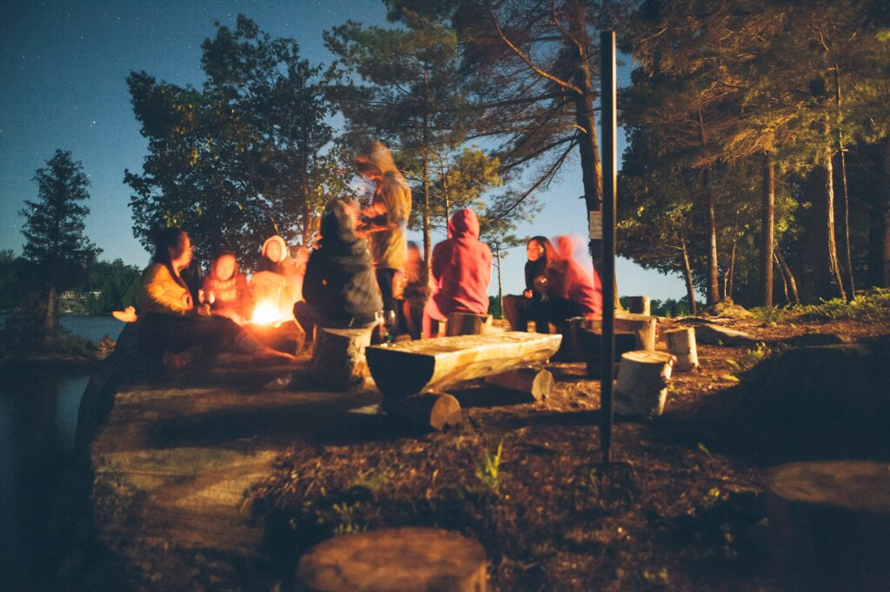
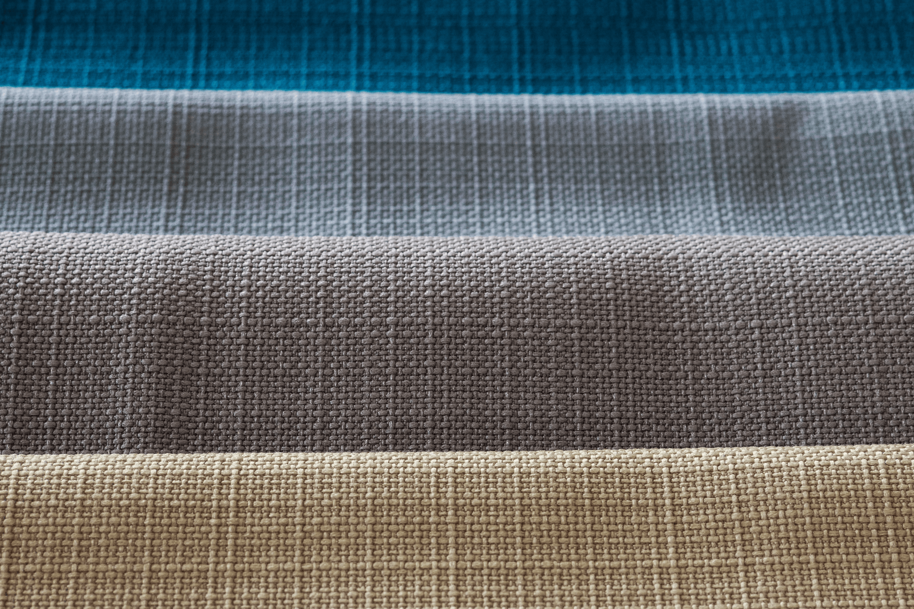

About
Our jackets are
for all kinds of activities
Our jackets are for those who like being outdoors, hiking , exploring, skiing , camping and canoeing.

for all kinds of weather
The jackets are suitable for various weather conditions ensuring you are comfortable whatever adventure you go on.
for all kinds of people
No matter how old you are or how active you are, you can certainly find a jacket to explore the world in.
Let's help our planet together!
Our materials

Recycling bottles
Thor-TEX and LOKILoft are made from recycled bottles found in the Indian ocean. We have collected more than 1000 tonnes of plastic to recycle them into our materials.

Recycling nylon
Our Frøyatec material is made from recycled nylon. By using recycled nylon we reduce the usage of raw petroleum and decrease the impact on our planet.